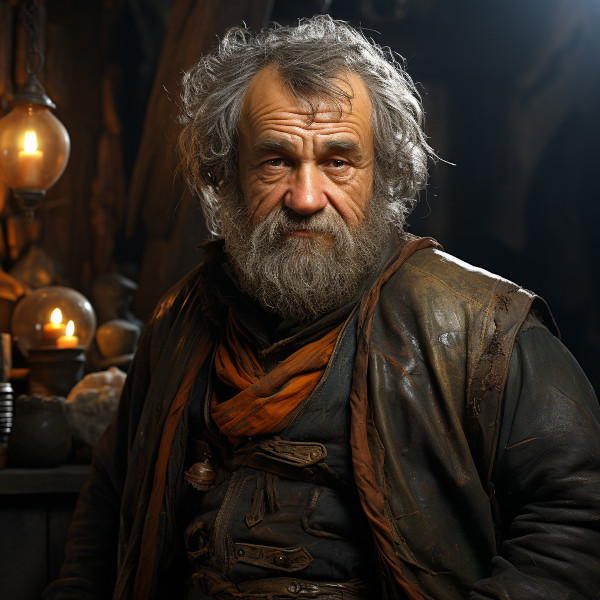

Elias Vashdro

Figure 1: Elias Vashdro
- Age
- Elderly
- Race
- Gathashim
- Occupation
- Merchant/Bounty Hunter
- Home
- Ponet Cidade
- Eneagram Scale
- Enneagram Type: 7 - The Enthusiast
Characteristics
- Optimistic: Elias always finds a silver lining, no matter the situation.
- Adventurous: There’s no challenge too big or mystery too deep for him.
- Distractable: With so many interests, Elias can sometimes lose focus on his current task.
- Generous: Whether it’s with his wealth or knowledge, Elias loves to share.
- Restless: Rarely satisfied with the status quo, he’s always looking for the next big thing.
- Background
Elias’s primary motivation is to experience life to its fullest. He is always on the lookout for new experiences and is afraid of missing out. This fear often drives him to take risks, which is evident in his dual occupation. Elias is spontaneous, versatile, and can often be scatterbrained due to his many interests. However, he has an acute ability to stay present, thanks to his merchant background that requires meticulous attention to details. Despite his joyous and adventurous demeanor, deep down, Elias is constantly battling a fear of confinement and pain, which is why he’s always on the move.
Elias was born deep within the heart of the caverns of Gathashim. The sonorous melodies of stalactites dripping onto stalagmites were the lullabies of his childhood. As he grew, he found himself drawn not to the confined beauty of the caves but to the world above, with its vast skies and uncharted territories.
Despite coming from a lineage of miners and blacksmiths, Elias developed an insatiable curiosity and a knack for trade. He started with collecting unique gems from the caverns and trading them in the markets above, but soon his dealings expanded to a plethora of goods and services.
Elias’s life took a turn when, during one of his trade expeditions, he stumbled upon a wanted criminal. Using his wit and skills, he captured the outlaw and realized the thrill of the hunt. This incident marked the beginning of his career as a bounty hunter.
Over the years, Elias became proficient in tracking down rare items for his merchant business and even rarer bounties for the right price. His journeys have taken him across Gran Imperio, from the dense forests of Hallashim to the vast Kaukloutan desert.
Despite his adventures, Elias’s heart found a home in Ponte Cidade. The city’s intertwining bridges and bustling markets offered him a base to return to, a place to sell his acquired goods, and a hub of information for his next bounty. Yet, for all his successes, a part of Elias remained unfulfilled. The adoption of Lunara provided him a connection he didn’t realize he missed, grounding him and giving him a renewed purpose.
In Ponte Cidade, Elias’s dual life is the stuff of legends. By day, he’s a reputable merchant, but by night, he’s a fearless bounty hunter who can track anyone or anything. His home is adorned with souvenirs from his adventures, each with a story of its own.